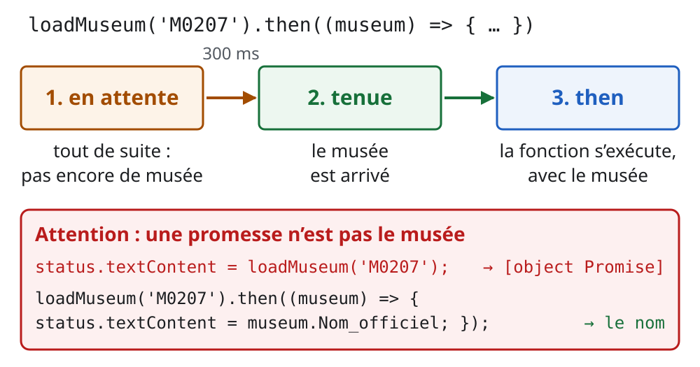

mardi 1 décembre 2026
Compétences visées : C4 · résolution de problème
Livrable : le pas à pas pas-a-pas-promesse envoyé sur GitHub, et node --test p1-nom-du-musee.test.js au vert.
log('A'), setTimeout(() => log('B'), 0), log('C') ?event.preventDefault() ?then (20 min)then(fonction) : la fonction reçoit la valeur, à son arrivée.
thenthen renvoie une nouvelle promesse.then a renvoyé.Attention
[object Promise] dans la page : vous avez affiché la promesse, pas sa valeur.
const m = loadMuseum('M0194'); : que vaut m.Ville ?// au-dessus de chaque ligne.pas-a-pas-promesse : app.js, logic.js, essai.js.rattrapage/promesse/, une étape à la fois.// Au clic sur le bouton Charger
button.addEventListener('click', () => {
// Le message d'attente, tout de suite
status.textContent = 'Chargement...';
// La demande part : on reçoit une promesse, pas le musée
const promise = loadMuseum('M0207');
// Dans la console : la promesse, encore en attente
console.log(promise);
});export function cityMuseumNames(id) {
// Première demande : le musée qui a cet identifiant
return loadMuseum(id)
// then 1 : il arrive, on demande ceux de sa ville
.then((museum) => loadMuseumsOfCity(museum.Ville))
// then 2 : la liste arrive, on garde les noms
.then((museums) => museums.map((item) => item.Nom_officiel));
}p1-nom-du-musee/logic.js : museumLabelLater(id).node --test p1-nom-du-musee.test.js au vert.p1-nom-du-musee/app.js : l’écouteur du bouton.p1b-ordre-des-lignes : quatre lignes à remettre dans l’ordre.p1c-musees-d-une-ville : un then, puis l’écouteur.p2-musees-voisins/logic.js : neighbourNames(id).then.p2-musees-voisins/app.js : le message, puis la liste.p4-fabriquer-une-promesse : wait(ms, value).p4-fabriquer-une-promesse.defi.test.js au vert.À retenir
then(fonction) : la fonction reçoit la valeur, à son arrivée.then reçoit ce que le précédent a renvoyé.const result = loadMuseum('M0194'); ?then ?DWWM 2026-2027 — Kevin Bardoux